文件系统¶
文件¶
- 文件：用于存储信息的连续逻辑空间 e.g. 数据库、音频、视频、网页
- 类型：
- 数据：文本（字符）、二进制以及特定于应用程序的数据
- 程序
- 特殊文件：
proc文件系统（使用文件系统接口来获取系统信息）
文件属性¶
- 名称 (Name)：唯一以人类可读形式保留的信息
- 标识符 (Identifier)：在文件系统内唯一标识文件的标签（数字）
- 类型 (Type)：支持多种类型的系统需要此属性
- 位置 (Location)：指向设备上文件位置的指针
- 大小 (Size)：文件的当前大小
- 保护 (Protection)：控制谁可以进行读取、写入和执行
- 时间、日期和用户标识 (Time, date, and user identification)：用于保护、安全和使用情况监控的数据
Tip
- 关于文件的信息保存在目录结构中，该结构维护在磁盘上
- 有许多变体，包括扩展文件属性（例如文件校验和）
file命令：查看文件类型stat命令：查看文件详细状态
文件操作¶
- create：必须在文件系统中寻找空间，并且必须在目录中分配一个条目
- open：大多数操作需要先打开文件；为其他操作返回一个句柄(handler)
- read/write：需要维护一个指针
- seek：文件内重新定位
- close：关闭文件
- delete：释放文件空间
- Hardlink：维护一个计数器（直到最后一个链接被删除才真正删除文件）
- truncate（截断）：清空文件内容，但保留其属性
Info
其他操作可以通过这些基本操作来实现
e.g. 复制 (Copying)：创建并进行读/写
打开的文件¶
- 管理打开的文件需要若干数据：
- Open-file table：追踪所有打开的文件
- File pointer：指向最后一次读/写的位置，每个打开该文件的进程都各有一个
- File-open count：文件被打开次数的计数器，以便在最后一个进程关闭它时，将数据从打开文件表中移除
- 文件的磁盘位置：数据访问信息的缓存
- 访问权限 (Access rights)：每个进程的访问模式信息
- 某些文件系统提供文件锁 (file lock)来调解对文件的访问
- 类型：
- 共享锁 (Shared lock)：多个进程可以并发获取该锁（读取操作）
- 排他锁 (Exclusive lock)：只有一个进程可以获取该锁（写入操作）
- 机制：
- 强制锁 (mandatory lock)：根据已持有和请求的锁，内核直接拒绝访问
- 劝告锁 (advisory lock)：进程可以查找锁的状态并自行决定如何处理
- 类型：
文件类型¶
- 文件扩展名：作为文件名的一部分
-
magic number：在文件开始部分放一些 magic number 来表明文件类型
e.g. 7f45 4c46 是 ASCII 字符，表示 ELF，代表 elf 文件格式
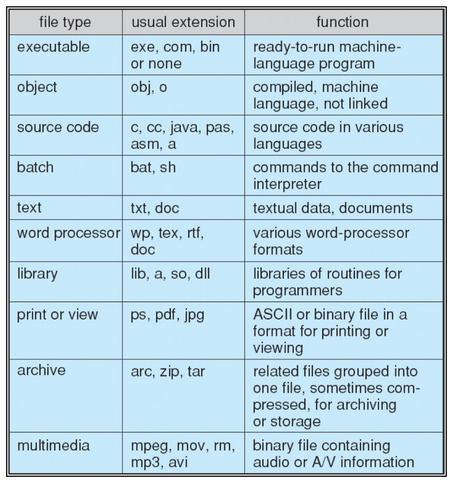
文件结构¶
- 文件可以有不同的结构，由操作系统或程序决定
- 类型：
- 无结构 (No structure)：字节或字构成的流 e.g. Linux 里的转储文件 dumps
- 简单记录结构 (Simple record structure)：按行排列的记录，可以是固定长度或可变长度 e.g. 数据库
- 复杂结构 (Complex structures)：e.g. Word 文档、可重定位的程序文件
- 通常由用户程序负责识别文件结构
文件共享¶
- 文件共享：普遍用于多用户系统
- 实现：通过保护方案 (Protection Scheme)
- User IDs：唯一标识用户，允许针对单个用户进行保护控制
- Group IDs：允许将用户划分到不同的组中，从而赋予组级别的访问权限
-
在分布式系统 (Distributed Systems)中，文件可以通过网络进行共享
- 网络文件系统 (NFS) 是一种常见的分布式文件共享机制
- 客户机-服务器模型 (Client-Server Model) 允许客户机从服务器挂载远程文件系统
远程文件共享
- 标准的操作系统文件调用会被转换成远程调用 (Remote Calls)
- NFS 是标准的 UNIX 文件共享协议，CIFS（通用因特网文件系统）是标准的 Windows 文件共享协议
访问方式¶
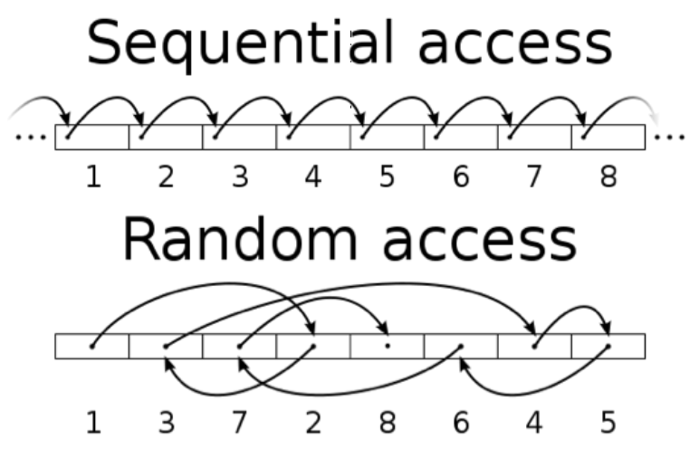
-
顺序访问 (Sequential access)
- 按预先确定的顺序访问一组元素
- 对于某些介质类型，这是唯一的访问模式 e.g. 磁带
- 直接访问 (Direct access)/随机访问 (random access)
- 可以在（大致）相等的时间内访问序列中任意位置的元素，与序列大小无关
- 在磁带上也可以模拟随机访问，但访问时间会有所不同（倒带）
其他访问方式
- 基于直接访问方法，文件的索引指向各个块
- 要在文件中寻找一条记录，首先检索索引，然后利用指针访问对应的物理块
- 可以使用多层索引
目录¶
- 目录是包含所有文件信息的节点集合
- 目录结构和文件本身都常驻在磁盘上
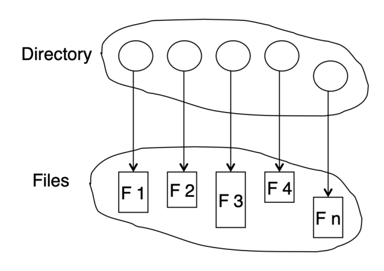
目录操作¶
- 创建文件 (Create a file)：需要创建新文件并添加至目录
- 删除文件 (Delete a file)：从目录中移除一个文件
- 列出目录 (List a directory)：列出目录中的所有文件
- 搜索文件 (Search for a file)：模式匹配
- 遍历文件系统 (Traverse the file system)：访问目录内的每一个目录和文件
目录结构¶
组织目录需要实现：
- 高效性 (Efficiency)：快速定位一个文件
- 命名方便 (Naming)：组织目录结构使其对用户而言非常便利
- 两个用户可以让不同的文件拥有相同的名字
- 同一个文件可以拥有几个不同的名字
单级目录¶
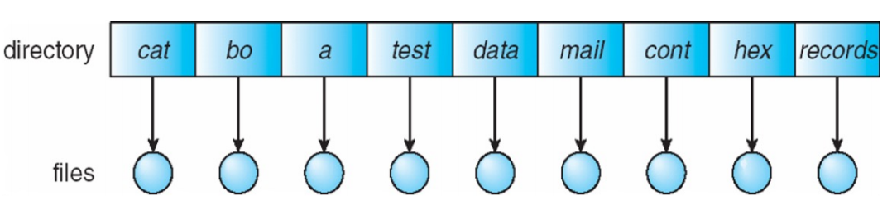
- 所有用户共用一个单一的目录
- 缺点：存在命名问题和分组问题 e.g. 当两个用户想给各自的文件起相同的名字时会发生冲突
多级目录¶
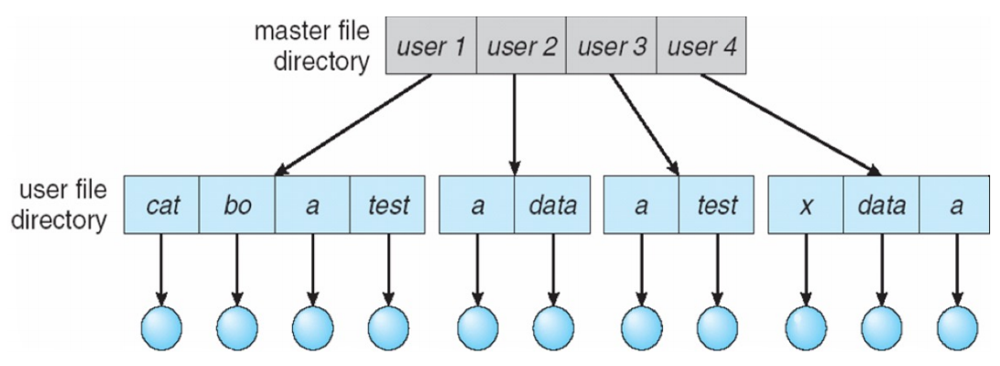
- 为每个用户设立独立的目录
- 不同的用户可以让不同的文件拥有相同的名字
- 每个用户都有自己的用户文件目录 (UFD)，它们包含在主文件目录 (MFD) 中
- 优点：搜索效率高
思考
如何在不同用户之间共享文件？ \(\rightarrow\) 引入路径
树状结构目录¶
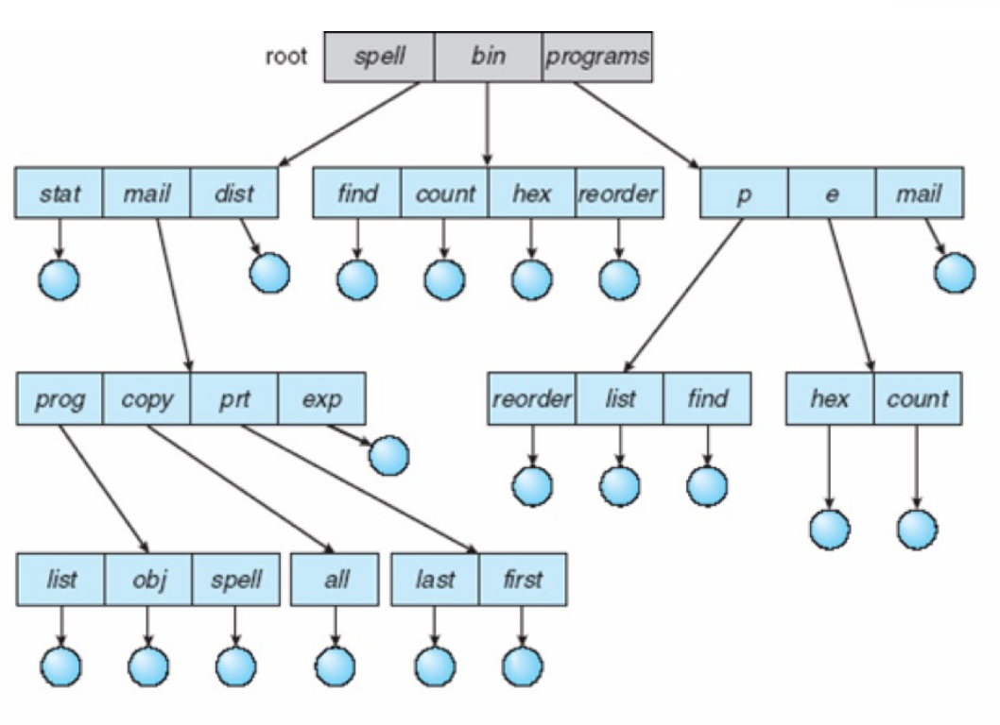
- 优点：搜索高效、可以对文件进行分组、命名方便
- 访问文件：绝对路径或相对路径
注意
树状结构目录不允许共享文件和目录（如果共享则说明多个指针指向同一个文件，这会变成图而不是树）
相关命令
mkdir <dir>创建目录rmdir <dir>删除目录（空目录）rm -r <dir>删除目录（非空目录）sudo rm -rf /从根目录删除所有文件rm <file>删除文件touch <file>创建文件pwd显示当前目录路径
无环图目录¶
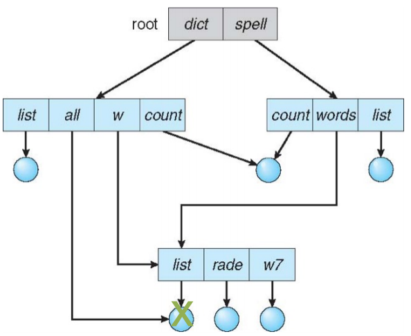
- 将目录组织成有向无环图
- 实现别名：允许创建指向某个目录条目或文件的链接 (Links)
- 悬空指针问题 (Dangling Pointer Problem)
- e.g. 如果删除了文件
/dict/all，那么/dict/w/list和/spell/words/list就会变成悬空指针 - 解决方法：
- 反向指针 (Back Pointers)：记录所有指向该实体的指针（大小可变）
- 引用计数器 (Reference Counter)：统计指向该实体的链接数量，只有当计数器归零时，才进行（物理上的）真正删除
- e.g. 如果删除了文件
- 共享文件的方式：硬链接、软链接
通用图目录¶
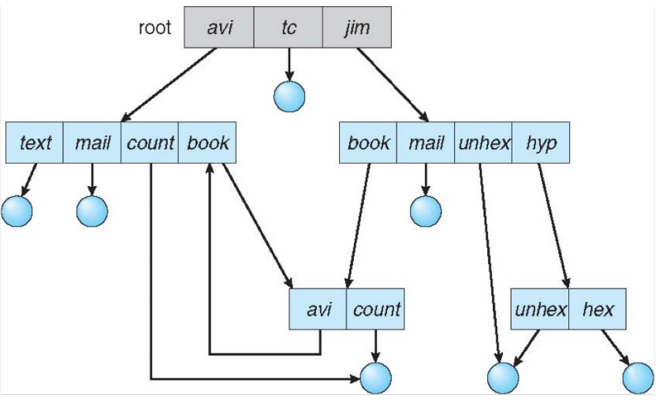
- 允许任意链接可能会在目录结构中产生环
- 问题：可能会导致无法回收磁盘空间（两个指针互相指向，引用计数一直不归零）
- 解决方案：
- 允许环的存在，但使用垃圾回收机制来回收磁盘空间
- 每次添加新链接时，运行环检测算法
目录实现¶
Protection¶
- 访问类型：读、写、追加、执行、删除、列出
- 访问控制列表（ACL）：为每个文件和目录分配一个
- 优点：细粒度控制 (Fine-grained Control)
- 缺点：如何构建该列表；如何将列表存储在目录条目中
Unix 访问控制
- 三种访问模式：读、写、执行（使用 3 位编码
RWX） - 三类用户：所有者 (Owner)、用户组 (Group) 和 其他用户 (Others)
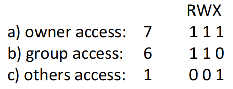
- 若要向用户授予访问权限，可以创建一个组并更改其访问模式（在 Linux 中，使用
chmod和chgrp命令）
文件系统¶
- 文件系统是 disk 的抽象，文件是磁道/扇区的抽象
- 文件系统提供了一组文件的连贯视图
Info
- CPU 抽象成进程
- memory 抽象成地址空间
- storage 抽象成文件系统
磁盘与文件系统¶
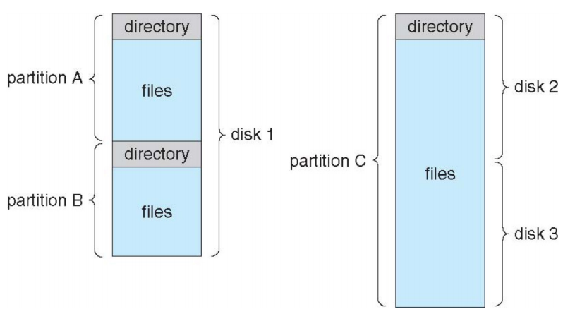
- 磁盘可以细分为 partitions（也被称为微型磁盘（minidisks）或切片（slices））
- 不同的分区可以有不同的文件系统
- volume：包含文件系统的分区
- 每个 volume 通过 volume’s table of contents 追踪文件系统信息
- 文件系统可以是通用目的或特殊目的
- 磁盘或分区也可以裸用（raw）（不建立文件系统） e.g. 数据库一类的应用程序更倾向于使用裸磁盘（raw disks）
文件系统¶
挂载 1. 文件系统在被访问之前必须先进行挂载 (Mounted) 2. 挂载：将一个文件系统连接到整个系统，通常形成一个单一的命名空间 3. 挂载点 (Mount Point)：被挂载的文件系统所在的位置
Tips
- 挂载文件系统后，挂载点原有的旧目录将会被隐藏（不可见）
mount命令：查看已挂载的文件系统
文件系统¶
结构 1. 操作系统可以同时支持多种文件系统 2. 文件系统放在辅助存储（磁盘）上 1. 磁盘驱动程序提供读/写磁盘块的接口 2. 文件系统为用户/程序提供存储接口，实现逻辑块到物理块的映射 3. 文件系统通常采用分层结构来实现和组织 1. 优点：有利于降低复杂度和减少冗余 2. 缺点：会引入额外的调用开销并可能降低性能
| Text Only | |
|---|---|
1 | |
逻辑文件系统¶
- 功能：维护文件系统所需的所有元数据（meta-data），即除实际文件内容以外的所有数据
-
存储内容
- 目录结构
-
文件控制块（FCB）：由文件相关描述信息构成的存储结构
FCB 存储内容
- 命名、所有权、权限
- 引用计数、时间戳、指向其他 FCB 的指针
- 指向磁盘上数据块的指针
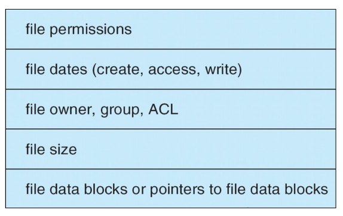
-
上层输入：打开/读取/写入的指定文件路径（filepath）
- 下层输出：读取/写入的逻辑块（logical blocks）
文件组织模块¶
- 功能：
- 负责进行地址转换（把逻辑块映射到物理块）
- 负责管理空闲空间
- 上层输入：逻辑块号
- 下层输出：物理块号
基本文件系统¶
- 在 Linux 中对应“块 I/O 子系统”（block I/O subsystem）
- 功能：分配和维护包含文件系统、目录以及数据块的各种缓冲区（充当 Cache，用于提升系统性能）
- 输入/输出：物理块号
I/O 控制¶
- 组成：设备驱动程序（Device drivers）和中断处理程序（Interrupt handlers）
- 上层输入：物理块号
- 下层输入：
- 写入设备控制器的内存中，以触发实际的磁盘读写操作
- 响应并处理相关的硬件中断
文件系统¶
数据结构 1. On-disk structures（存储的内容更少） 1. A Boot Control Block（可选）：存储操作系统的 volume 的第一块 2. A volume control block 3. A directory 4. A per-file File Control Block (FCB) 2. In-memory structures 1. 挂载表（Mount table）：每个已挂载的 volume 在其中占有一项 2. 目录缓存（Directory cache）：用于加速路径转换（提升性能） 3. 全局打开文件表（Global open-file table）：整个系统公用 4. 进程打开文件表（Per-process open-file table）：针对每个进程独立维护 5. 各类缓冲区：暂存在传输中的磁盘块（提升性能）
Info
在 UNIX 中，FCB 被称为 inode
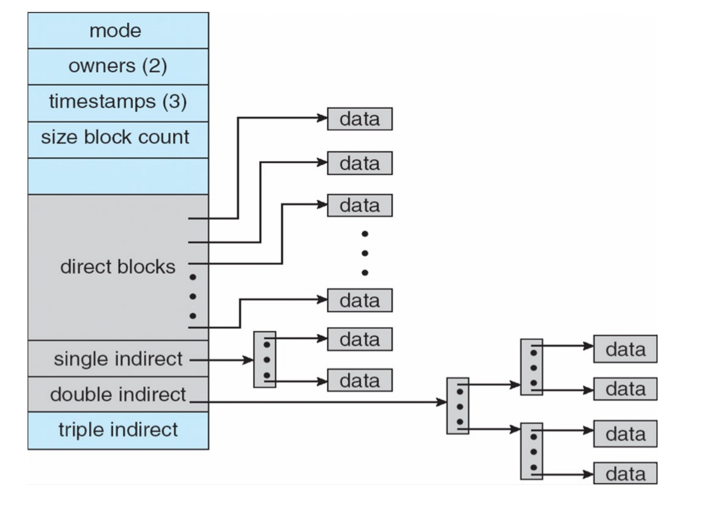
文件系统¶
操作
虚拟文件系统（VFS）
创建文件¶
- 应用程序进程发出创建新文件的请求
- 逻辑文件系统分配一个新的 FCB（
inode） - 更新相应的目录，将新的文件名称与对应的 FCB 关联
打开文件¶
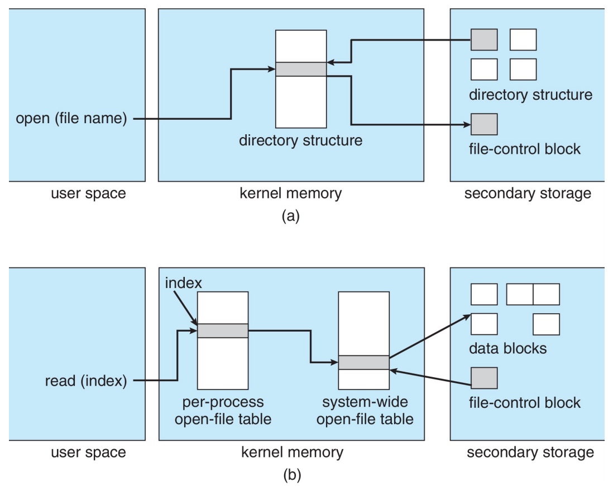
- 检查全局打开文件表，看该文件当前是否正被其他进程使用
- 如果在用：在该进程的进程打开文件表中创建一个新表项，并让其指向现有的全局打开文件表项
- 如果未在用：
- 在目录结构中检索该文件名
- 找到之后将该文件的 FCB 从磁盘加载到内存中，并将其放入全局打开文件表中
- 在进程打开文件表中新建一个表项，包含指向全局打开文件表中对应表项的指针
- 递增全局打开文件表中的打开计数
- 系统向调用者返回一个指向进程打开文件表项的指针（所有后续的文件读写操作都通过该指针进行）
关闭文件¶
- 移除对应的进程打开文件表项，全局打开计数递减
- 如果所有进程都关闭了该文件：将内存中的目录信息复制写回磁盘，并从内存中销毁该全局打开文件表项
磁盘块分配方法¶
连续分配、链式分配、索引分配